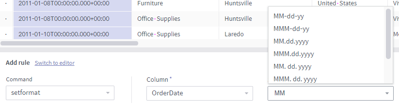
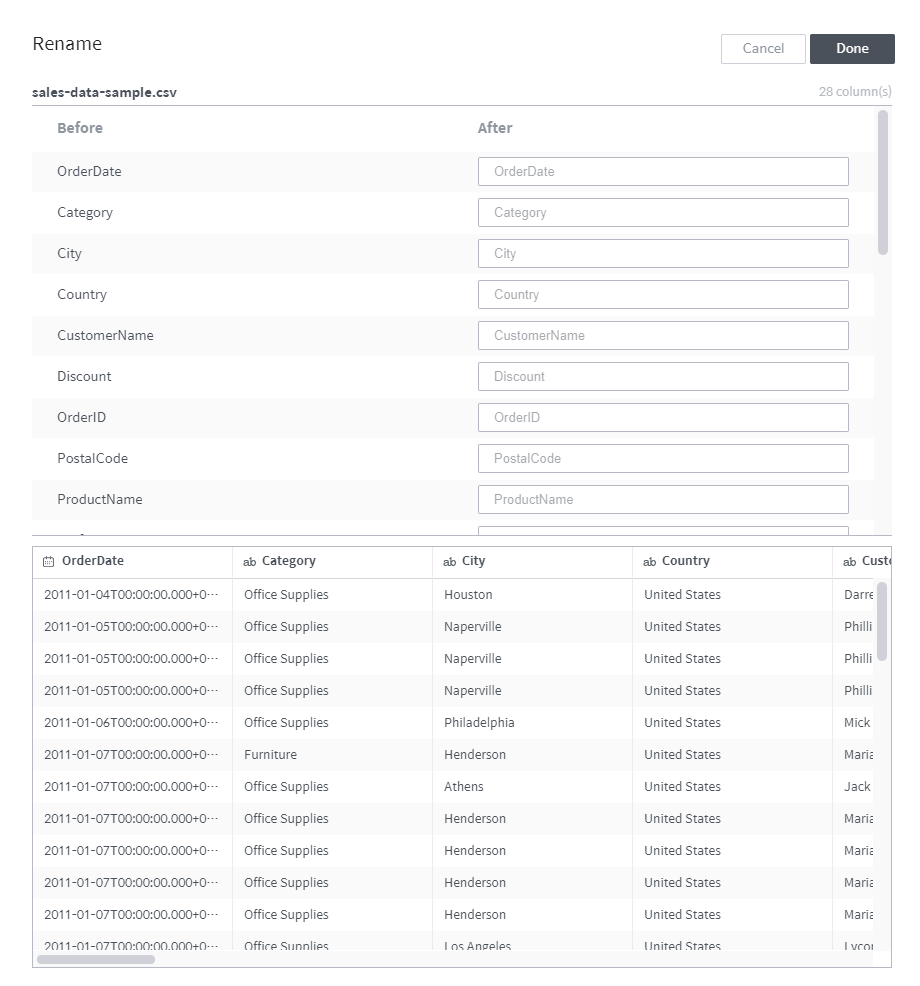
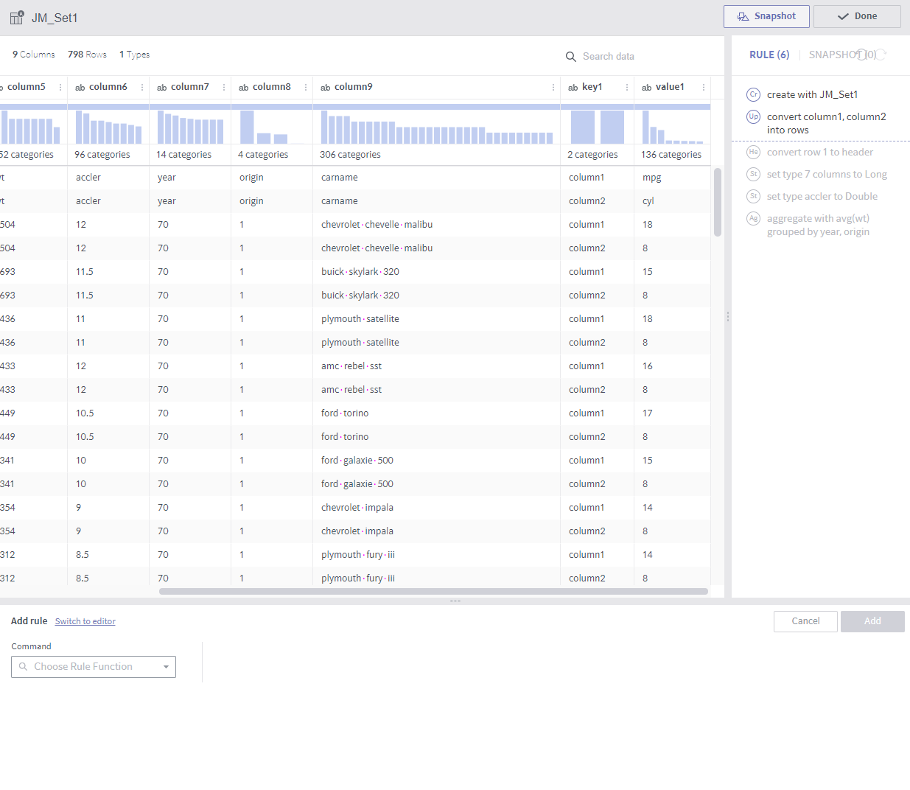
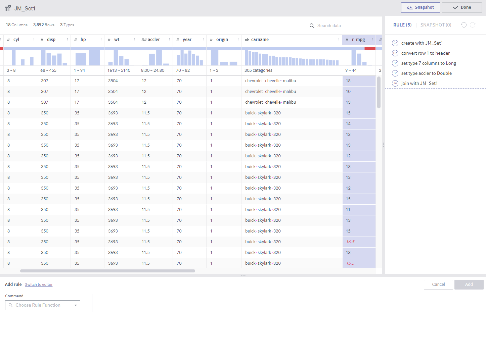

Rule types¶
This section describes each rule in terms of the following.
Name of rule
Required arguments
Optional arguments
Description
Notes
The types of rules supported in data preparation are as follows:
In addition to these rules, data preparation provides various expressions, thereby supporting almost every function required for general data preprocessing.
header¶
Required arguments: Row number that contains the column name (1-base)
Description
This rule sets the content in the designated row as the column name.
This is useful for reading a CSV file with column names in the first row.
Unless otherwise specified, data preparation automatically performs header. This rule may be deleted if header results are not desired, but such cases are not common.
settype¶
Required arguments
Column: A list of target columns
New type: Select one out of Long, Double, String, Boolean, and Timestamp
Optional arguments
Set format: A format string (Joda Time) in the case of timestamp
Description
This rule changes the type of the selected columns.
The rule is considered successful even if the result is a type mismatch, which should be separately addressed.
setformat¶
Required arguments
Column: A list of target columns
Set format: A Joda-Time format string
Description
This rule changes the display format of a Timestamp column.
The target column must be of the Timestamp type.
Notes
As shown below, the format input field lists different entries depending on the input. The candidate list is narrowed as more values are entered.

rename¶
Required arguments
Column: A single target column
New column name: New name
Description
This rule changes the name of the selected column.
To rename two or more columns at once, click the Rename multiple columns button at the bottom of the command input panel to display the following popup.

keep¶
Required arguments
Condition: A conditional expression returning a Boolean value
Description
All rows are deleted except the rows that return true for the conditional expression.

delete¶
Required arguments
Condition: A conditional expression returning a Boolean value
Description
All rows that return true for the conditional expression are deleted. This is the opposite of keep.
replace¶

Required arguments
Column: A list of target columns
Pattern: A string pattern to be replaced
In the case of a constant string: Characters enclosed inside
'('Houston','Naperville','Philadelphia'etc.)In the case of a regular expression: Characters enclosed inside
/(/[ ,_]+/,/\s+$/, etc.)New value: A new string expression to replace the specified pattern
Constant string
Regular expression
$1_$2_$3, etc.
Optional arguments
Ignore between characters: Does not make any replacement for content between the characters entered here
Match all occurrences: Whether all characters of a word must match
Ignore case: Whether to make the strings case-insensitive
Description
String replacement is performed for the selected columns.
Notes
Do not use
'or/in a new value.Values from other columns are not available as new values. replace performs string replacement for content in the selected columns only. (cf. set rule)
set¶

Required arguments
Column: A list of target columns
Expression: An expression to be applied to the values of the target column. Values from other columns may be referenced. (cf. replace rule)
When multiple columns are involved, use a
$colvariable, which will be substituted by the respective target column during each conversion.That is, when applying the set command on
column1andcolumn2,$colbecomescolumn1during conversion ofcolumn1, and$colbecomescolumn2during conversion ofcolumn2.
Optional arguments
Use only under the following conditions
The set rule is applied only to rows satisfying this condition.
This rule may be regarded the same as the
WHEREstatement in SQL.
Description
This rule replaces the values in the selected column with results returned by the expression.
When using a complex expression, click the Advanced editor to display the popup shown below:

In the Advanced editor, you can edit the expression in a larger window while viewing the column list and a list of functions and their descriptions, and also run a validity check before implementing the expression.
derive¶
Required arguments
Expression: An expression whose resulting values are to form a new column. Similar to the set rule, values from other columns may be referenced.
New column name
Description
While similar to the set rule, this rule creates a new column instead of replacing an existing one.
Notes
The new column is inserted after the last existing column in the expression.
split¶
Required arguments
Column: A list of target columns
Pattern: A string expression that serves as a separator that splits the target strings. Allows a regular expression as is the case for the replace rule.
Number: Number of columns to be divided into.
Description
Each row is split by the given Number - 1.
When the pattern is no longer matched, the rest columns contain a null.
Notes
Note that columns are created as many as the Number input.
merge¶
Required arguments
Column: A list of target columns
Delimiter: A constant string with which values of different columns are concatenated.
New column name
Description
The target columns are merged with the Delimiter into a new column.
Notes
Similar to the replace rule, enclosing with a
'may be skipped. That is, strings not enclosed by/or'are automatically enclosed by'.
extract¶
Required arguments
Column: A list of target columns
Pattern: A string pattern to be extracted. Allows a regular expression as is the case for the replace rule.
Number: Number of instances to be extracted
Optional arguments
Ignore between characters: Does not make any replacement for content between the characters entered here
Ignore case: Whether to make the strings case-insensitive
Description
A new column(s) with content matching the given pattern is created.
Notes
When there are multiple target columns, the resulting columns are inserted after each target column.
countpattern¶
Required arguments
Column: A list of target columns
Pattern: A string pattern to be detected. Allows a regular expression as is the case for the replace rule.
Optional arguments
Ignore between characters: Does not make any replacement for content between the characters entered here
Ignore case: Whether to make the strings case-insensitive
Description
New columns are created based on the number of matches with the pattern.
This is highly similar to extract. The only difference is that it counts the number of matches, rather than extracting the matched content.
Notes
When there are multiple target columns, the resulting columns are inserted after each target column.
nest¶
Required arguments
Column: A list of target columns
Type: Map or Array
New column name
Description
The target columns are grouped into a new column of the given type.
Below are examples of grouping columns into an array and map, respectively.

unnest¶

Required arguments
Column: A single target column
Select elements: 0-base index for an array, or key value for a map
Description
A new column is created by extracting the selected elements from an array or a map.
Notes
The target column must be of the array or map type.
flatten¶
Required arguments
Column: A single target column
Description
Rows are created from elements of an array.
Notes
The target column must be of the array type.

If the target array column has four elements as shown in the above example, each original row of the array results in four rows. Non-array columns result in the same columns.

aggregate¶

Required arguments
Expression: A list of aggregate functions
Group by: A list of columns that group values by.
Description
A new column is added from the results of grouping by each combination of the elements from the GroupBy columns.
A column is created for each expression. For example, two columns are created if average and count are designated as expressions.
The available aggregate functions are as follows:
- count()
- sum(colname)
- avg(colname)
- min(colname)
- max(colname)
Notes
Calculations are performed only for sampling results. Therefore, the snapshot?the results for the entire data?may be different.
Note that
()must be inserted when using the count function.count(colname) is currently not available.

pivot¶
Required arguments
Column: A list of columns subject to pivoting
Expression: A list of expressions whose resulting values form new columns (only aggregate functions are available)
Group by: A list of columns that group values by.
Description
Group By is performed for each combination of target columns and GroupBy columns. A dataset having the results as column values is created.
A set of columns is created for each expression. For example, if average and count are designated as expressions and the values in the pivoted columns are divided into ten groups, a total of 20 columns will be created.
Notes
This is used when performing GroupBy on at least two columns. (1 pivoted column, 1 GroupBy column)
Here, Rename multiple columns is useful as column names tend to get longer.

unpivot¶

Required arguments
Column: A list of target columns to be converted into values in new columns
GroupEvery: Number of columns (defaults to 1)
Description
Two columns are created?one contains the selected column names and the other contains their values. (If GroupEvery is set to 1)
If GroupEvery is the same as the number of selected columns, each resulting pair of columns contains the name and values of its respective original column. Therefore, If 10 columns are unpivoted with the GroupEvery argument set to 10, for example, a total of 20 columns are created.
Notes
Using the GroupEvery argument set to a factor of the number of columns will soon be supported.
<Where GroupEvery is set to 1>
<Where GroupEvery is set to the same as the number of columns>

join¶

Unlike other rules, join has a separate popup.
Required arguments (select in a popup or enter a value)
Dataset to join: A wrangled dataset in the same dataflow
Columns to join (toggle)
Join keys: Multiple values may be entered
Join type: Only inner join supported now
Description
Joins to the target dataset to create new columns.
This rule is the same as
joinused by a relational database.The results can be previewed by clicking the Show result button.
Notes
The join keys must be included in the columns to join.

union¶

Similar to join, union has a separate popup.
Required arguments (select in a popup)
Datasets to union: Multiple selections allowed.
Description
The content of the selected datasets is also processed.
This rule is the same as
union allused by a relational database.
Notes
The target datasets must coincide with the dataset that unions them in terms of column name, type, and number of columns.

window¶


Required arguments
Expression: A list of window functions
Group by: A list of columns that group values by. Row order created within each group. If not specified, the whole data is sorted based on the Sort by setting.
Sort by: Specifies columns by which the order of rows is determined. If not specified, data is sorted in the order of being inputted.
Description
Column values are created by calculating with the values of the preceding and following rows.
The rows are grouped first and then sorted within each group in the specified column order.
In the above example, each row value is averaged with the three preceding and following rows within the same State group.
If an immediately preceding row does not have the same state, earlier rows are searched.
The currently available window functions are as follows:
- row_number()
- lead(colname, int)
- lag(colname, int)
- rolling_sum(colname, int, int)
- rolling_avg(colname, int, int)
In addition to window functions, aggregate functions may be used.
Notes
When using window functions, error messages may not be properly displayed in the event of insufficient arguments.